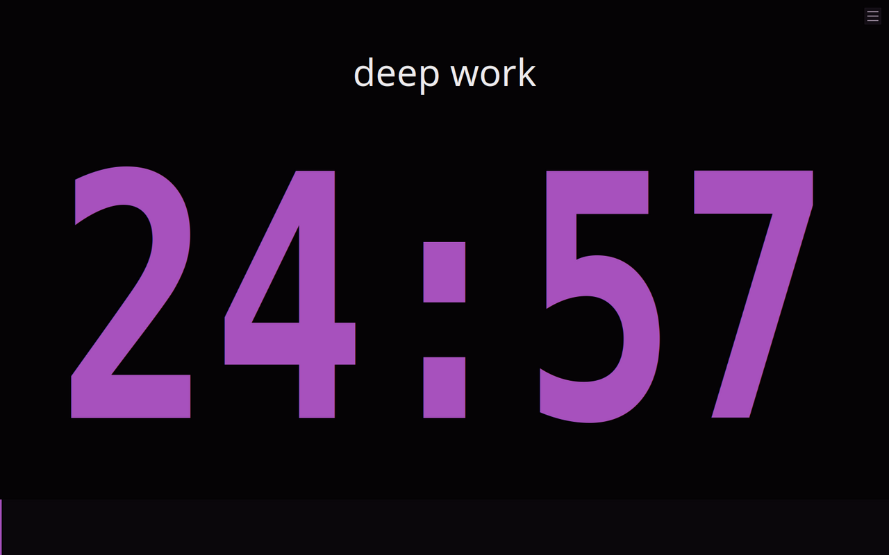
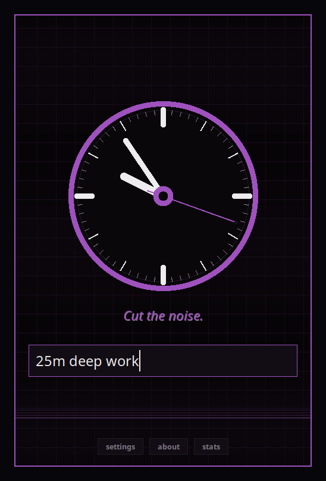
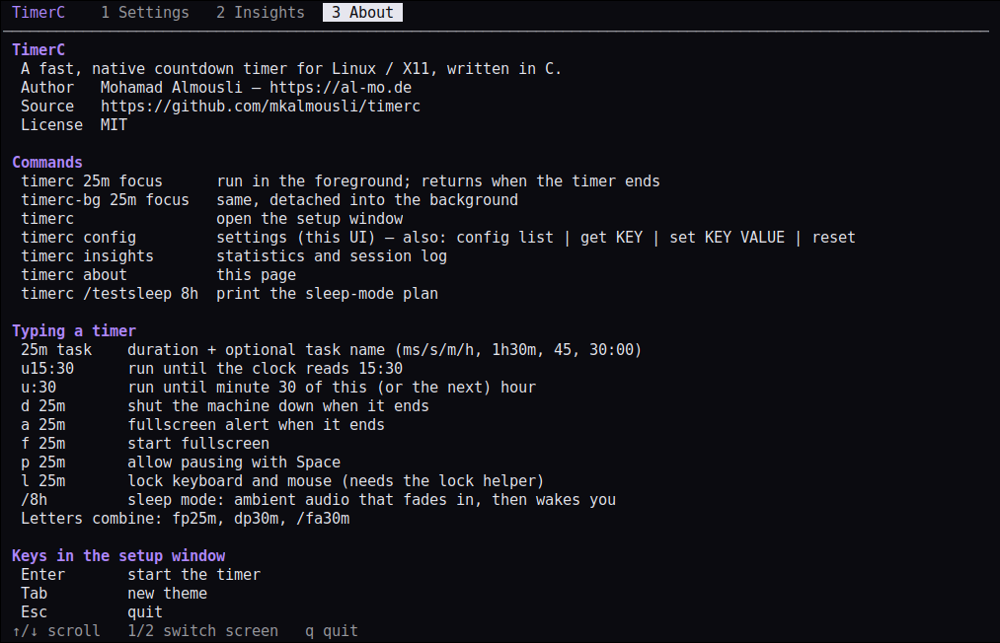
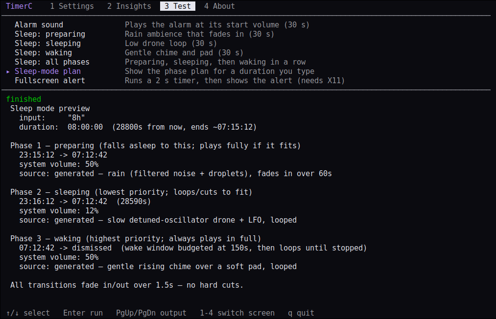
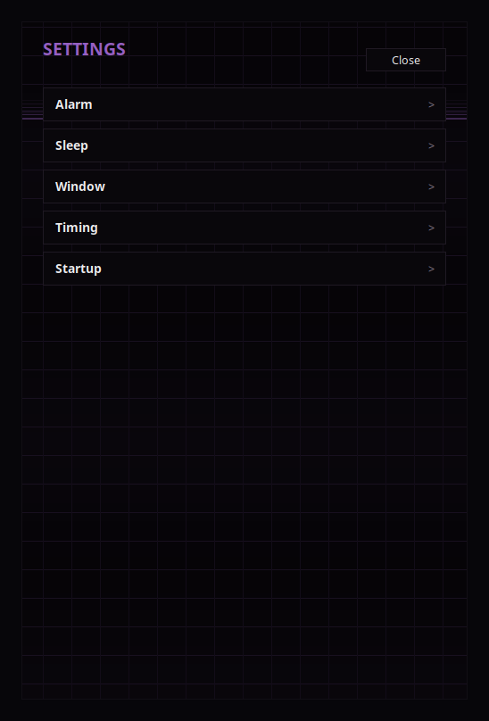
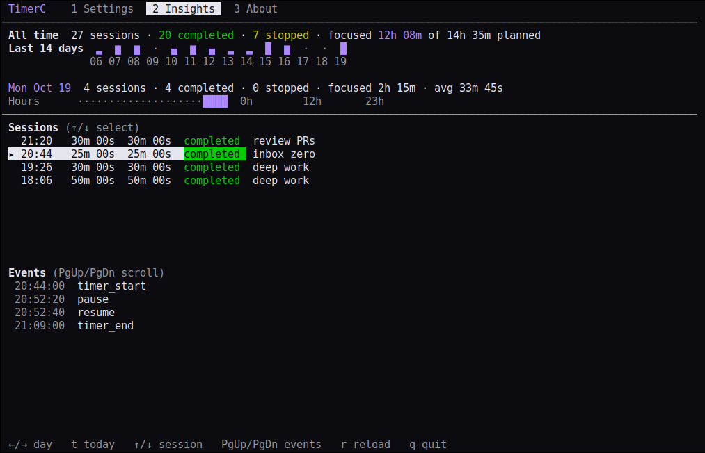

The countdown timer Linux deserves.
TimerC is a fast, native timer for X11, written in pure C. No GTK, no Qt, no Electron — a ~190 KB binary with procedural audio, themes, sleep mode and local insights.
curl -fsSL https://raw.githubusercontent.com/mkalmousli/timerc/main/install.sh | sh
See it in action
Two commands
timerc — blocking
Runs in the foreground and returns when the timer ends. Perfect for scripts: timerc 5m && notify-send done
timerc-bg — background
Same program, detached from the terminal. Start it and keep working.
timerc-uninstall — remove
Cleanly removes TimerC from any install prefix. Add --purge to delete your data too.
timerc 25m deep work # 25 minutes, task name
timerc u16:30 meeting # count down to 16:30
timerc fp1h # fullscreen + pausable
timerc a10s # fullscreen alert at the end
timerc d30m # shut down when done
timerc /8h # sleep modeFeatures
Native & tiny
Pure C on Xlib/Xft with SQLite. Starts instantly.
Smart input
25m, 1h30m, 1:30:00, u15:30 — with live preview as you type.
Procedural audio
Cues and a ramping alarm synthesised in code. No sound files, any of ALSA/PulseAudio/PipeWire.
Sleep mode
Rain and drone ambience that fades in, sustains and wakes you gently.
Insights (terminal)
Run timerc insights for daily and weekly stats, hourly heatmap and event log — all stored locally.
Settings (terminal)
Run timerc config for a TUI over every option, or script it with config set.
Generated themes
Fresh contrast-checked dark palettes every launch.
Focus lock
Optionally disconnect USB keyboard/mouse until time is up, with a safety watchdog.
Every distro
One-command installer for apt, dnf, pacman, zypper, apk and xbps.
Screenshots





FAQ
How do I uninstall it?
Run timerc-uninstall (add --purge to delete settings and history too). For the .deb: sudo apt remove timerc.
How do I install it?
Run the one-line installer above. It supports apt, dnf, pacman, zypper, apk and xbps; prebuilt tarballs and .deb packages exist for x86_64, i686, aarch64 and armv7.
timerc vs timerc-bg?
timerc blocks until the timer ends (scriptable); timerc-bg detaches into the background.
Wayland?
TimerC is an X11 app and runs through XWayland.
Where is my data?
Locally in ~/.config/timerc. Nothing leaves your machine. timerc-uninstall --purge deletes it.
Build from source
git clone https://github.com/mkalmousli/timerc && cd timerc
make && make install # installs to ~/.localUninstall
One command removes the binaries, man pages, desktop entry and icon. Your settings and history are kept unless you ask otherwise.
timerc-uninstall # lists what it removes, asks to confirm
timerc-uninstall --purge # also delete ~/.config/timerc (settings, history)
timerc-uninstall -n # dry run; -y skips the prompt